HTML
2.1 Web, frontend, backend y publicación
La Web es un conjunto de documentos residentes en diferentes máquinas y relacionados mediante hiperenlaces.
| Concepto | Idea clave |
|---|---|
| Frontend | Todo aquello con lo que el usuario interactúa. Incluye la página y lo que interpreta el navegador. |
| Página web | Documento que contiene el contenido a mostrar. |
| HTML | Lenguaje que estructura contenidos, enlaza páginas, muestra multimedia y permite visualizar la página en un navegador. |
| Navegador | Programa cliente que interpreta HTML. |
| Motor de renderizado | Parte del navegador que toma HTML, XML, imágenes y CSS para crear la representación visual. |
| Backend | Parte del sistema que atiende peticiones y sirve recursos desde el servidor. |
| Servidor web | Programa que recibe peticiones del cliente y sirve contenido estático: HTML, CSS, JavaScript e imágenes. |
| Motor HTTP | Recibe solicitudes HTTP/HTTPS, las interpreta, determina rutas, gestiona cabeceras, métodos y estados, y envía la respuesta. |
HTML significa HyperText Markup Language. Fue propuesto en 1989 y combina:
- universalidad: un estándar común para todos;
- lenguaje de marcas: formato definido mediante etiquetas, concepto asociado a Tunnicliffe en 1967;
- hipertexto: documentos enlazados mediante links, concepto asociado a Ted Nelson en 1965.
Navegadores y servidores
- Antes de 1993 los navegadores tenían poca funcionalidad.
- En 1993 Marc Andreessen desarrolla Mosaic en la NCSA.
- En 1994 aparece Netscape, con extensiones HTML propias como texto coloreado e imágenes.
- Microsoft responde con Internet Explorer, dando lugar a la guerra de navegadores.
- El W3C, impulsado por Tim Berners-Lee, busca ordenar el ecosistema y establecer estándares.
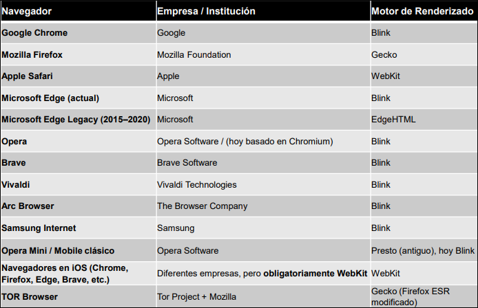
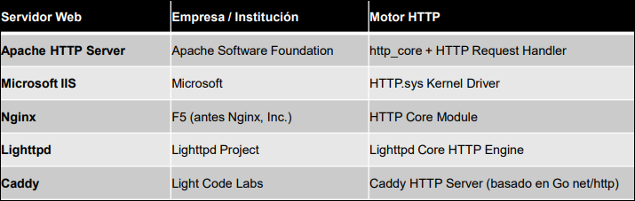
Publicación de una página
Para publicar una web se necesita subir el código a un servidor propio o contratar un hosting.
Una URL se interpreta como:
protocolo://nombredelsitioweb/rutahastalaraiz/ficherohtml
Ejemplo: http://www.lawebdepepe.com/index.html.
Instituciones y registros asociados:
- ICANN: Internet Corporation for Assigned Names and Numbers. Coordina a nivel global el sistema de nombres de dominio e IP para que Internet funcione de forma única y ordenada.
- WHOIS: directorio con información técnica y de contacto de propietarios de dominios. Permite consultar quién registró un dominio y ver datos asociados, como registrador, fechas, servidores DNS y contactos, cuando están disponibles.
- DNRD: Domain Name Registration Data. Es el conjunto de datos de registro de un dominio, como titular, registrador, estado, fechas y datos técnicos. WHOIS es una forma de consultar esos datos.
2.2 Historia, estandarización y versiones
Hitos principales
| Fecha | Hito |
|---|---|
| 1989 | Tim Berners-Lee y Robert Cailliau presentan en el CERN la propuesta WorldWideWeb. |
| 1991 | Se publica HTML Tags, primer documento formal de HTML, con 22 etiquetas. |
| 1993 | El IETF intenta convertir HTML en estándar, pero la propuesta no fructifica. |
| 1996 | El W3C pasa a publicar los estándares HTML. |
| 2004 | Apple, Mozilla y Opera crean WHATWG para relanzar la estandarización. |
| Enero 2008 | Primer Working Draft de HTML 5.0. |
| Diciembre 2012 | Primera Candidate Recommendation de HTML 5.0. |
| Julio 2014 | El W3C discute los Web Components, que permiten etiquetas personalizadas. |
Evolución de versiones
| Versión | Rasgos principales |
|---|---|
| HTML 1.0 / 2.0 | Texto plano con hiperenlaces; sin adornos. |
| HTML 3.0 | Etiquetas propietarias, colores, imágenes y guerra de navegadores. |
| HTML 3.2 | Estandariza algunas extensiones propietarias y elimina otras. |
| HTML 4.0 | Separa contenido, estructura y formato mediante CSS. |
| HTML 4.01 | Exige que todo elemento de línea esté dentro de un elemento de bloque. |
| XHTML 1.0 | Busca estructura XML; toda etiqueta abierta debe cerrarse. |
| HTML 5.0 | Reduce compatibilidad con versiones obsoletas, facilita nuevos navegadores e incorpora nuevas etiquetas, atributos, APIs y recursos nativos. |
Tipos de versiones:
- estricta: solo admite etiquetas aprobadas;
- transitoria: permite etiquetas no aprobadas;
- conjunto de marcos: permite etiquetas no aprobadas y marcos, actualmente desaconsejados por el W3C.
2.3 Documento HTML: estructura, sintaxis y metadatos
Estructura mínima
La estructura base de un documento HTML es:
<!DOCTYPE html>: declara el tipo de documento;html: raíz del documento; debe incluirlangpara declarar el idioma;head: metadatos, título, CSS, scripts y recursos no visibles como contenido principal;title: título de la pestaña, requerido y relevante para SEO;body: parte visible de la página.
En HTML5 la estructura se simplifica así:
<!DOCTYPE html>
<html lang="es">
<head>
<meta charset="utf-8">
<title>Mi página</title>
</head>
<body>
Contenido visible
</body>
</html>
DOCTYPE y validación
<!DOCTYPE ...> indica al navegador qué tipo de documento HTML está interpretando. En HTML5 se usa <!DOCTYPE html>.
| Familia | Tipo | Declaración |
|---|---|---|
| HTML 4.01 | Estricta | <!DOCTYPE HTML PUBLIC "-//W3C//DTD HTML 4.01//EN" "http://www.w3.org/TR/html4/strict.dtd"> |
| HTML 4.01 | Transitoria | <!DOCTYPE HTML PUBLIC "-//W3C//DTD HTML 4.01 Transitional//EN" "http://www.w3.org/TR/html4/loose.dtd"> |
| HTML 4.01 | Marcos | <!DOCTYPE HTML PUBLIC "-//W3C//DTD HTML 4.01 Frameset//EN" "http://www.w3.org/TR/html4/frameset.dtd"> |
| XHTML 1.0 | Estricta | <!DOCTYPE html PUBLIC "-//W3C//DTD XHTML 1.0 Strict//EN" "http://www.w3.org/TR/xhtml1/DTD/xhtml1-strict.dtd"> |
| XHTML 1.0 | Transitoria | <!DOCTYPE html PUBLIC "-//W3C//DTD XHTML 1.0 Transitional//EN" "http://www.w3.org/TR/xhtml1/DTD/xhtml1-transitional.dtd"> |
| XHTML 1.0 | Marcos | <!DOCTYPE html PUBLIC "-//W3C//DTD XHTML 1.0 Frameset//EN" "http://www.w3.org/TR/xhtml1/DTD/xhtml1-frameset.dtd"> |
El W3C permite validar páginas en http://validator.w3.org.
Codificación
HTML pretende ser texto universal, por eso debe declararse el conjunto de caracteres en head.
- Forma clásica:
<meta http-equiv="Content-Type" content="text/html; charset=utf-8" />. - Forma HTML5:
<meta charset="utf-8">.
Elementos, atributos y comentarios
Un elemento HTML tiene la forma:
<etiqueta atributo="valor">contenido</etiqueta>
Reglas prácticas:
- Todos los elementos pueden tener atributos, normalmente para añadir información o modificar su comportamiento.
- HTML no distingue mayúsculas/minúsculas en etiquetas ni atributos, pero se recomienda usar minúsculas.
- En XHTML las minúsculas y el cierre de etiquetas son obligatorios.
- Los valores de atributos pueden ir sin comillas, pero se recomienda usar
"..."; también pueden usarse comillas simples si el valor contiene comillas dobles. - Los atributos siempre van en la etiqueta de apertura y suelen ser pares
nombre="valor", aunque algunos son booleanos. - Los elementos vacíos no tienen contenido ni etiqueta de cierre.
<tag/>es estilo XHTML;<tag>como elemento vacío es la forma flexible habitual en HTML5.- Los comentarios se escriben con
<!-- comentario -->; pueden ser multilínea o aparecer en medio de una línea, y no se muestran en la página.
| Atributo | Uso |
|---|---|
id |
Identifica un elemento único. Se usa en anclajes, CSS, JavaScript y asociación con label. |
class |
Agrupa elementos. Puede repetirse y un elemento puede tener varias clases separadas por espacios. |
name |
Nombra datos, sobre todo en formularios. No tiene que ser único; en radio agrupa opciones excluyentes. |
title |
Añade información emergente al pasar el ratón sobre el elemento. |
lang |
Declara el idioma del documento, útil para navegadores, lectores y buscadores. |
Tipos de elemento:
- documento: estructuran la página (
html,head,body); - bloque: generan salto de línea y un rectángulo personalizable (tienen ancho y alto) (
h1,p,div); - línea: no generan salto de línea y ocupan solo lo necesario para mostrar su contenido (
a,img,span); - vacíos: sin contenido ni cierre (
img,br,meta, según sintaxis HTML).
2.4 SEO y robots
Las diapositivas indican que hay más de 2 billones de páginas web y que se crean miles cada día. Para favorecer las visitas:
- usar palabras clave en
title; - usar palabras clave en encabezados como
h1; - usar texto alternativo
alten imágenes; - añadir
<meta name="keywords" content="..."/>; - añadir
<meta name="description" content="..."/>; - enviar el sitio web a un motor de búsqueda.
Directivas para robots
Se indican con una metaetiqueta como:
<meta name="robots" content="noindex, nofollow" />
| Directiva | Significado |
|---|---|
all |
Sin restricciones; es el valor predeterminado. |
noindex |
No muestra la página ni enlace en caché en resultados. |
nofollow |
No sigue los enlaces de la página. |
none |
Equivale a noindex, nofollow. |
noarchive |
No muestra enlace en caché. |
nosnippet |
No muestra fragmento de la página. |
noodp |
No usa metadatos de Open Directory para títulos o fragmentos. |
notranslate |
No ofrece traducción en resultados. |
noimageindex |
No indexa imágenes de la página. |
unavailable_after |
No muestra la página después de la fecha indicada en formato RFC 850. |
Robots citados: Googlebot y MSNBot.
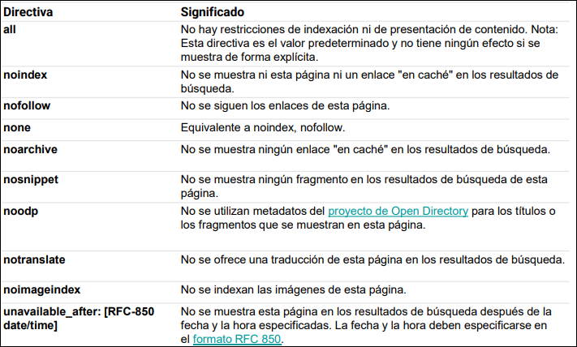
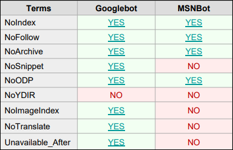
2.5 Etiquetas de estructura, head y formato
head
| Etiqueta | Función principal |
|---|---|
head |
Contenedor de metadatos; va entre html y body. |
title |
Título del documento en la pestaña; requerido. |
style |
Estilos definidos dentro de la página. |
link |
Relaciona el documento con recursos externos; también se usa para favicon, normalmente tras title. |
meta |
Define metadatos: charset; content; http-equiv como cabecera HTTP; name para keywords, description, author, viewport y robots. |
script |
JavaScript del lado cliente. |
base |
URL base o target de las URLs relativas; debe tener href y/o target. |
viewport representa el área visible de la web y cambia según el dispositivo.
Semántica y estructura
div y span son contenedores genéricos: div de bloque y span de línea. En HTML5 se prefieren etiquetas semánticas cuando describen mejor el contenido.
| Etiqueta | Uso |
|---|---|
header |
Cabecera de documento o sección: encabezados, logo/icono, autoría. |
nav |
Conjunto de enlaces de navegación. |
main |
Contenido principal del documento, normalmente único. |
section |
Grupo temático: capítulos, introducción, contacto, etc. |
article |
Contenido independiente y reutilizable; si contiene imágenes puede usar figure. |
aside |
Contenido relacionado indirectamente, como barra lateral. |
footer |
Pie con autoría, copyright, sitemap, vuelta arriba o documentos relacionados. |
figure |
Agrupa contenido visual o ilustrativo. |
figcaption |
Pie descriptivo de figure. |
Formato y texto
| Etiqueta | Uso |
|---|---|
h1 ... h6 |
Encabezados jerárquicos; los buscadores los usan para indexar estructura y contenido. |
p |
Párrafo. |
hr |
Separador horizontal. |
br |
Salto de línea dentro de un bloque; no sustituye a p. |
b |
Negrita visual. |
strong |
Texto importante, normalmente en negrita. |
i |
Itálica visual. |
em |
Énfasis, normalmente en itálica. |
mark |
Texto resaltado. |
small |
Texto pequeño. |
del |
Texto borrado, normalmente tachado. |
ins |
Texto insertado, normalmente subrayado. |
sub |
Subíndice. |
sup |
Superíndice. |
pre |
Texto preformateado; conserva espacios y saltos. |
blockquote |
Cita extensa separada del texto. |
q |
Cita breve en línea. |
abbr |
Abreviatura. |
address |
Información de contacto, normalmente en itálica y bloque aparte. |
cite |
Título de una obra, normalmente en itálica. |
bdo |
Cambia la dirección del texto con dir="rtl" o dir="ltr". |
button |
Botón clicable; puede estar disabled y usar type="button", submit o reset. |
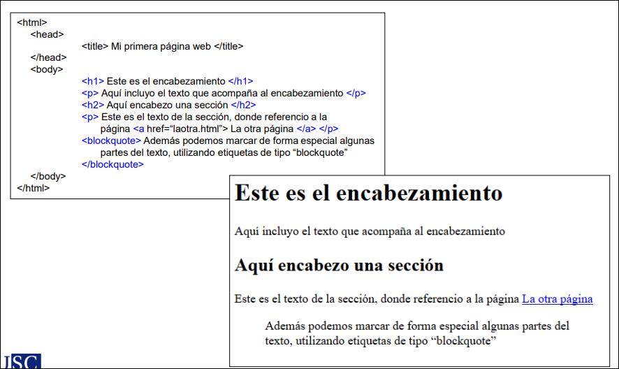
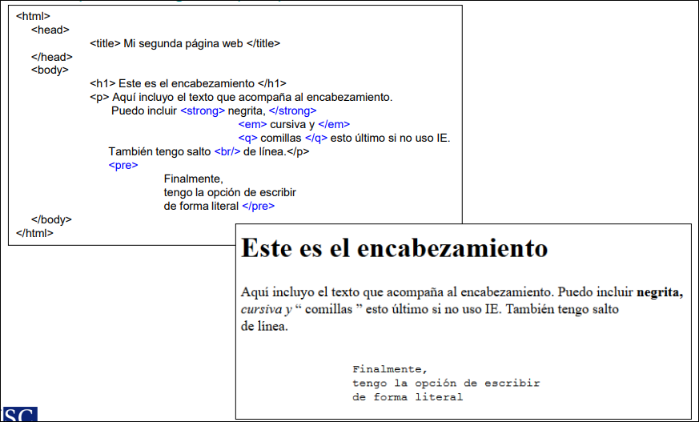
2.6 Enlaces, listas, imágenes y tablas
Enlaces
La etiqueta a crea hiperenlaces. Su destino se indica con href, que puede apuntar a una página, archivo, correo o ancla interna.
| Caso | Forma |
|---|---|
| Enlace externo | URL de otro sitio. |
| Enlace interno | Página del mismo sitio. |
| Ancla interna | href="#id" apunta al elemento con ese id. |
| Imagen como enlace | Se coloca img dentro de a. |
| Botón como enlace | Puede usarse onclick=document.location="link". |
El atributo target controla dónde se abre el enlace:
_self: misma ventana o pestaña, valor por defecto;_blank: nueva ventana o pestaña;_parent: frame padre;_top: ventana completa.
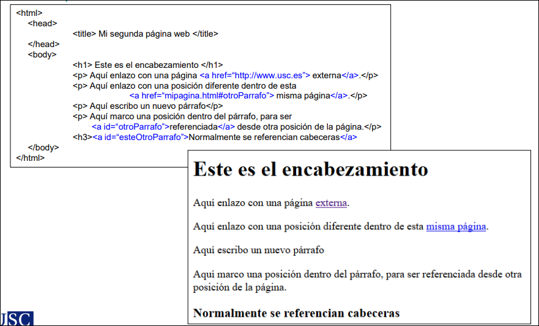
Listas
| Etiqueta | Uso |
|---|---|
ul |
Lista no ordenada. |
ol |
Lista ordenada. type puede ser 1, A, a, I, i; start indica el número inicial. |
li |
Elemento de ul u ol. |
dl |
Lista de definición. |
dt |
Término a definir. |
dd |
Definición del término. |
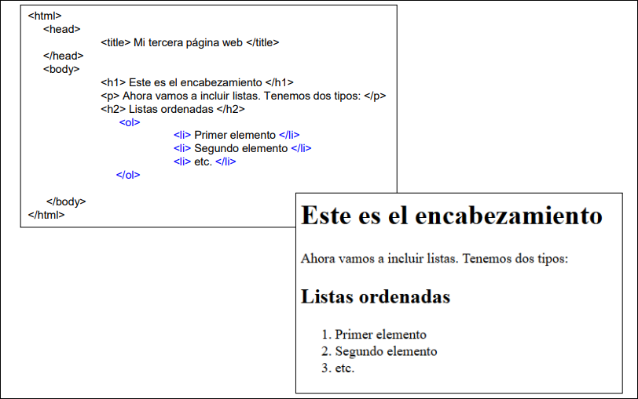
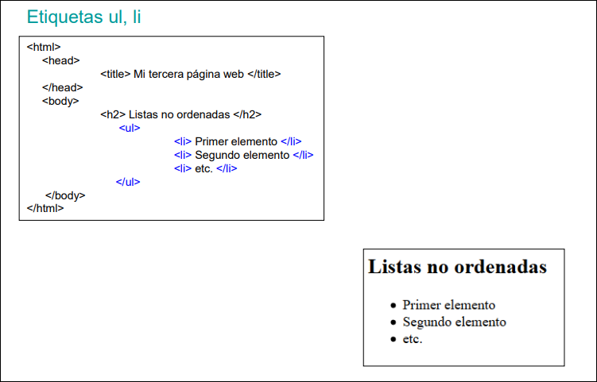
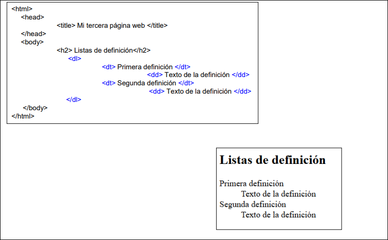
Imágenes
img define un espacio para contener imágenes. Sus atributos clave son:
src: ruta de la imagen; puede ser absoluta o relativa;alt: texto alternativo si no carga o para lectores de pantalla;widthyheight: tamaño de la imagen;style: alternativa para controlar tamaño mediante estilos;loading:eagercarga inmediatamente ylazyretrasa la carga hasta que la imagen sea necesaria.
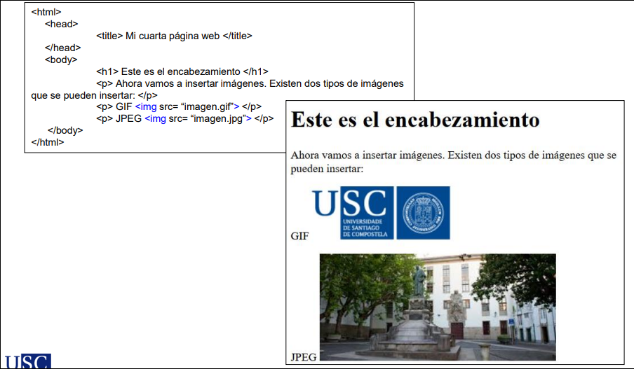
Formatos citados:
| Formato | Tipo | Uso recomendado |
|---|---|---|
| JPEG/JPG | Con pérdida | Fotografías. |
| PNG | Sin pérdida | Transparencia alta. |
| GIF | Sin pérdida + animación | 256 colores; compatibilidad antigua. |
| SVG | Vectorial | Iconos y gráficos escalables. |
| ICO | Bitmap | Favicons. |
| BMP | Bitmap | Soportado, pero poco eficiente. |
| WebP | Compresión con/sin pérdida, alfa y animación | Logos, UI, iconos simples y animaciones. |
| AVIF | Compresión superior a WebP, alfa y animación | Fotos, animaciones y mejor relación calidad/tamaño. |
Notas:
- Para fotos: AVIF.
- Para logos, UI e iconos simples: WebP o PNG.
- Para animaciones: WebP o AVIF; GIF solo si se necesita compatibilidad total antigua.
- Para compatibilidad total con dispositivos antiguos: JPEG + PNG.
- AOMedia es un consorcio tecnológico formado por empresas como Google, Apple, Mozilla, Netflix, Amazon, Microsoft y Cisco, entre otras.
Mapa de imagen y picture
| Etiqueta/atributo | Uso |
|---|---|
map |
Define un mapa de imagen; se identifica con name. |
area |
Define zonas clicables dentro del mapa. |
shape |
Forma del área: rect, circle, poly o default. |
coords |
Coordenadas de la zona. |
usemap="#nombre" |
Relaciona la imagen con el mapa. |
picture |
Permite mostrar imágenes diferentes según dispositivo o tamaño. |
source |
Dentro de picture, aporta alternativas con srcset y condiciones media. |
Tablas
| Etiqueta/atributo | Uso |
|---|---|
table |
Tabla de datos; no debe usarse para maquetar. |
tr |
Fila. |
td |
Celda de datos. |
th |
Celda de cabecera; al principio de tr crea cabeceras de fila. |
caption |
Título o contexto de la tabla. |
colgroup |
Conjunto de grupos de columnas. |
col |
Grupo de columnas; span indica cuántas columnas abarca. |
thead |
Cabecera de tabla. |
tbody |
Cuerpo de tabla. |
tfoot |
Pie de tabla. |
colspan |
Número de columnas que abarca una celda. |
rowspan |
Número de filas que abarca una celda. |
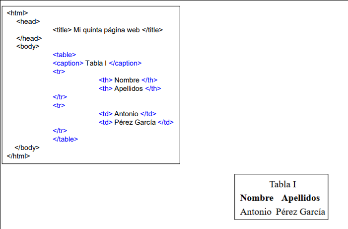
2.7 HTML5: simplificación, multimedia y nuevas etiquetas
HTML5 simplifica la sintaxis:
- doctype:
<!DOCTYPE html>; - codificación:
<meta charset="utf-8">; - más flexibilidad en mayúsculas/minúsculas y comillas:
id="daw",id=daw,ID="daw"; - nuevas etiquetas semánticas:
header,footer,section,article,aside,nav,figure,figcaption; - más recursos nativos:
audio,video,track,canvas,iframe; - nuevos atributos, nuevos atributos de formulario, APIs nativas, menos necesidad de plugins y mejor acceso al DOM desde JavaScript.
Multimedia
| Etiqueta | Uso |
|---|---|
audio |
Inserta sonido reproducible. |
video |
Inserta vídeo reproducible. |
source |
Ofrece varias fuentes del mismo recurso para mejorar compatibilidad. |
track |
Añade subtítulos o pistas de texto, importante para accesibilidad. |
canvas |
Superficie de dibujo controlada con JavaScript. |
iframe |
Incrusta otra página o recurso externo. |
La etiqueta video admite:
controls: controles de reproducción, pausa y volumen;autoplay: arranque automático al cargar;muted: sonido silenciado al arrancar.
Formatos de vídeo citados:
| Formato/códec | Soporte indicado |
|---|---|
| MP4 / H.264 | Muy alto. |
| WebM / VP8-VP9 | Alto. |
| Ogg / Theora | Bueno. |
| MP4 / H.265 | Parcial. |
| AV1 | Amplio pero parcial. |
| AVI, WMV, FLV | Nulo en HTML5 moderno. |
Otras etiquetas HTML5
| Etiqueta | Uso |
|---|---|
details |
Bloque desplegable que el usuario puede abrir/cerrar. |
summary |
Texto visible que controla details. |
mark |
Resalta texto relevante. |
meter |
Medida dentro de un rango conocido. |
time |
Semántica para fechas y horas. |
progress |
Progreso de una tarea. |
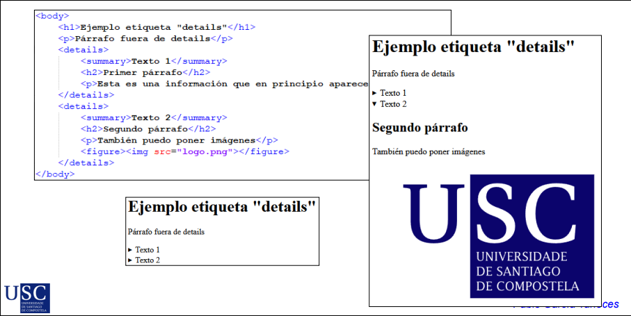
2.8 Formularios
Los formularios HTML permiten aplicaciones interactivas al recopilar información del usuario.
Tienen dos partes:
- acción con la información: etiqueta
form; - estructura de entrada:
input,textarea,select,datalist,fieldset, etc.
<form action="#" method="post">
<label for="nombre">Nombre:</label>
<input type="text" id="nombre" name="nombre" required>
<br><br>
<label for="email">Correo electrónico:</label>
<input type="email" id="email" name="email" required>
<br><br>
<label for="mensaje">Mensaje:</label>
<textarea id="mensaje" name="mensaje" rows="4"></textarea>
<br><br>
<button type="submit">Enviar</button>
</form>
form
form define un formulario y funciona como contenedor de controles.
| Atributo | Uso |
|---|---|
name |
Nombre del formulario. |
action |
Recurso o programa del servidor que recibe los datos. |
method |
Método HTTP usado para enviar datos: get o post. |
autocomplete |
Activa o desactiva autocompletado. |
novalidate |
Evita la validación al enviar. |
GET es el método por defecto: añade datos a la URL en pares nombre/valor, tiene límite práctico de longitud, no debe usarse para datos sensibles y permite guardar el resultado como marcador. POST coloca los datos en la petición HTTP, no tiene la misma limitación de longitud y no permite guardar el resultado como marcador.
Controles input
input crea elementos gráficos para capturar información.
Reglas generales:
namees obligatorio si se quiere enviar el valor al servidor;valuealmacena el valor inicial;typedetermina el control;- algunos controles tienen eventos asociados como
onBlur,onFocus,onClick,onChange,onSelect,onKeyDown,onKeyPressyonKeyUp.
type |
Uso | Eventos citados |
|---|---|---|
button |
Botón estándar para acción específica, normalmente JavaScript. | onBlur, onFocus, onClick |
text |
Texto breve en una línea: nombres, títulos, búsquedas o usuario. | onBlur, onFocus, onClick, onChange, onSelect |
password |
Texto no legible visualmente para accesos o autenticación. | onBlur, onFocus, onClick, onChange, onSelect |
hidden |
Campo oculto con datos útiles para el servidor, como identificadores o tokens. | - |
submit |
Botón de envío. | onBlur, onFocus, onClick |
reset |
Restaura valores iniciales del formulario. | onBlur, onFocus, onClick |
file |
Selección de archivo local para subir documentos, imágenes o adjuntos. | onBlur, onFocus, onClick, onChange |
checkbox |
Selección múltiple. | onBlur, onFocus, onClick |
radio |
Selección exclusiva; varias opciones comparten name. |
onBlur, onFocus, onClick |
image |
Botón de imagen; envía coordenadas coord.x y coord.y. |
onBlur, onFocus, onClick |
range |
Selector gráfico dentro de un rango: edad, volumen, porcentaje o escala. | - |
date |
Selección de día: cumpleaños, reservas o citas. | - |
week |
Selección de semana: planificación o turnos. | - |
month |
Selección de mes: informes, periodos o filtros. | - |
color |
Paleta de selección de color para temas o personalización. | - |
Ejemplos:
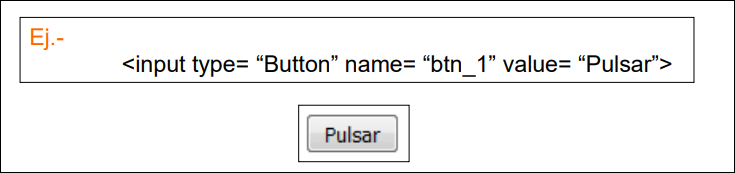
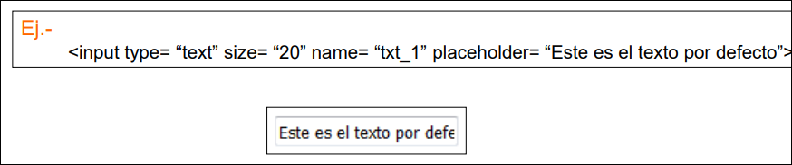
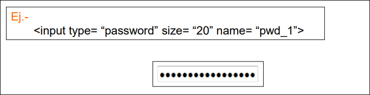
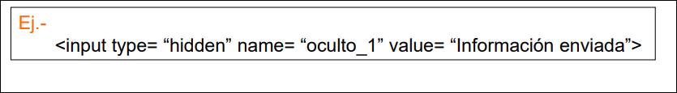
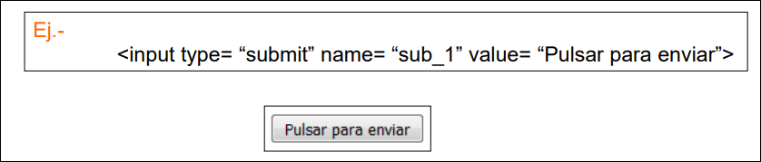
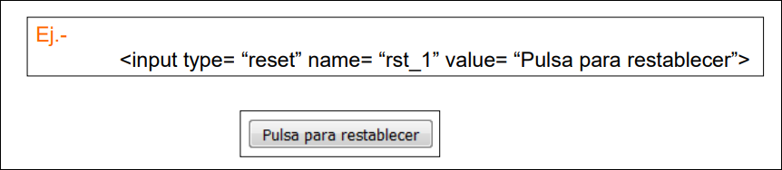
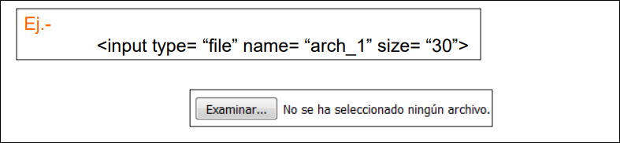
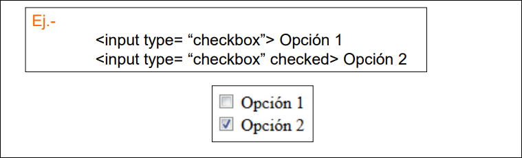
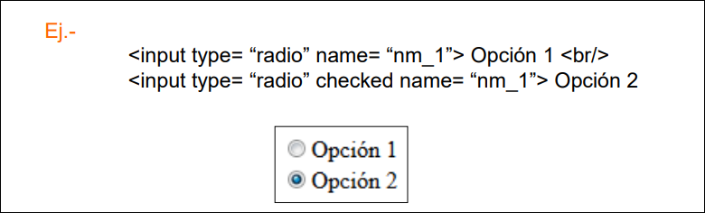
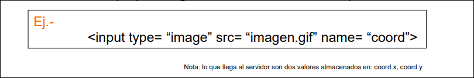
Otros controles de formulario
| Etiqueta | Uso |
|---|---|
textarea |
Texto multilínea; eventos onKeyDown, onKeyPress, onKeyUp. |
select |
Lista desplegable seleccionable con teclado o ratón; multiple permite varias opciones. |
option |
Opción de select o datalist; selected marca una opción preseleccionada. |
datalist |
Lista de valores sugeridos para un input; el input la referencia mediante list. |
fieldset |
Agrupa controles relacionados. |
legend |
Título de un fieldset. |
label |
Texto asociado a un control; for debe coincidir con el id del input. |
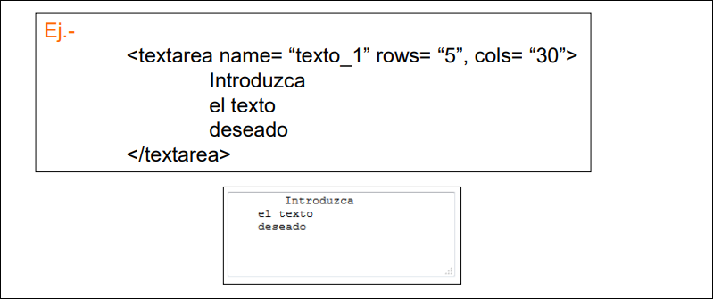
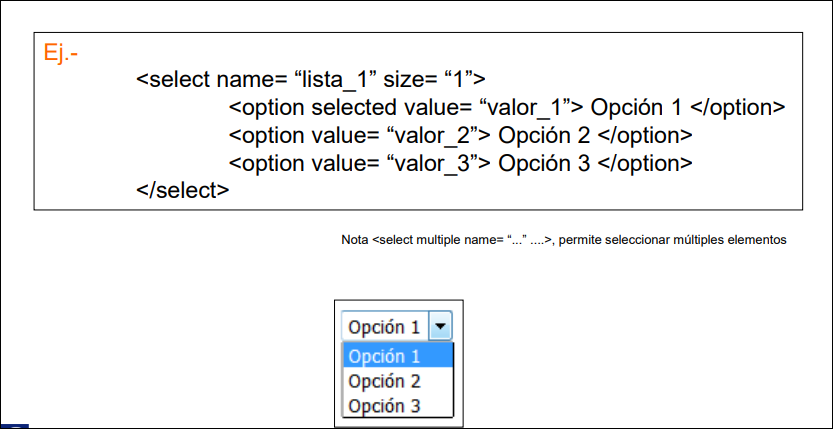
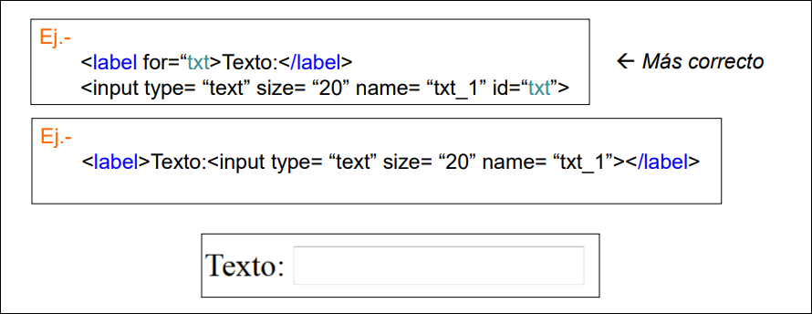
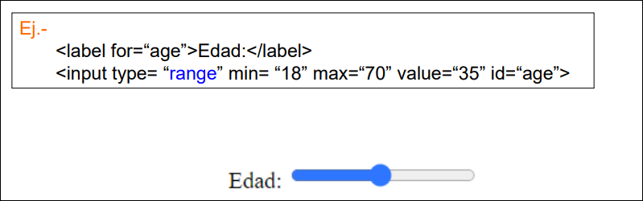
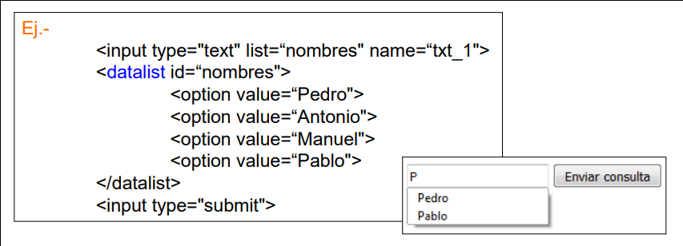
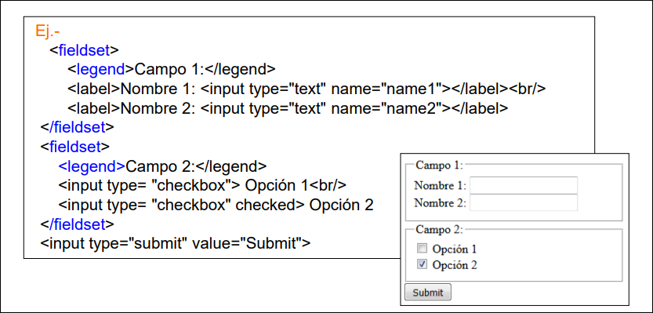
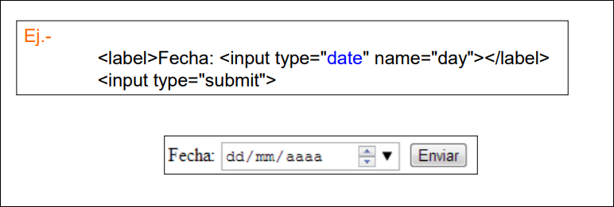
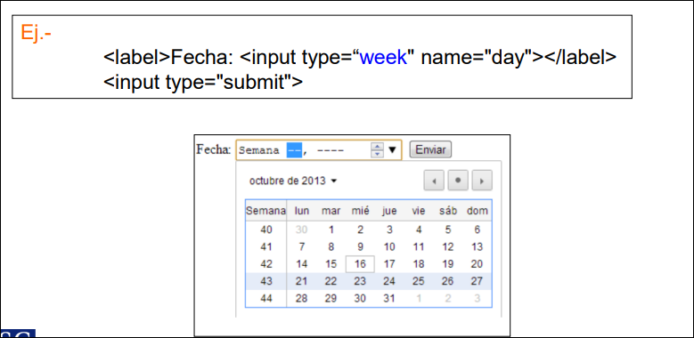
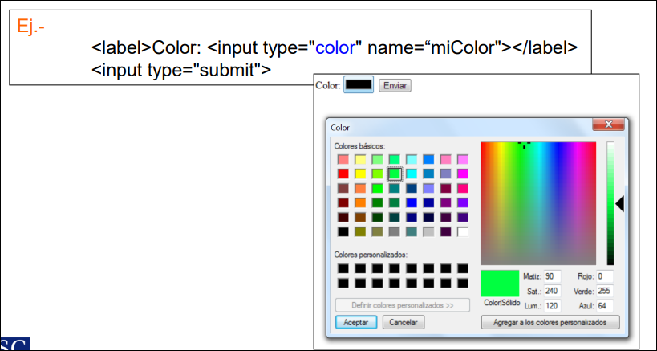